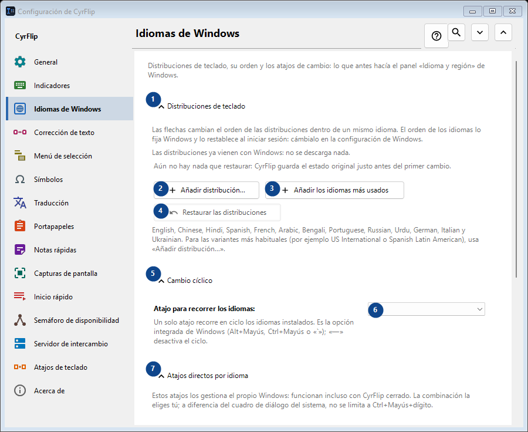
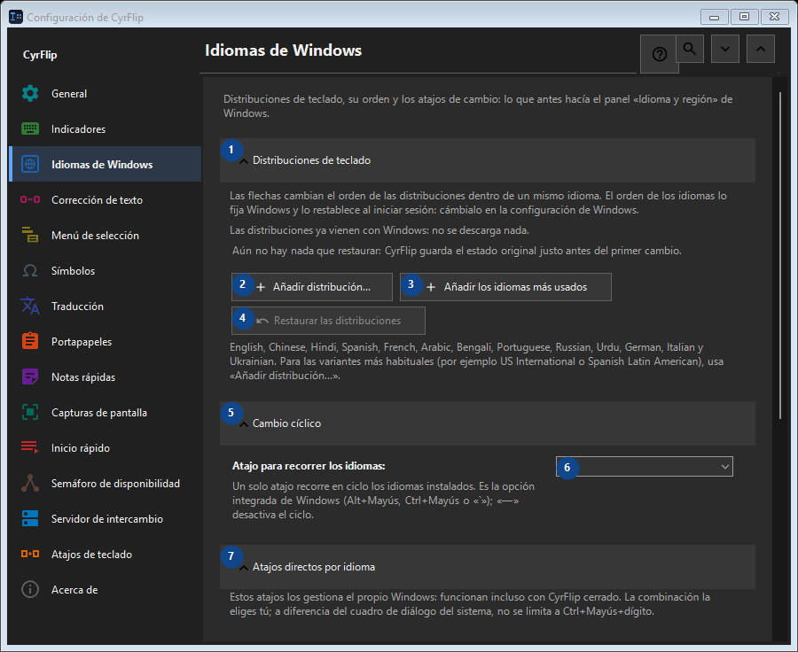

Idiomas de Windows
Para qué sirve
Distribuciones de teclado, su orden y los atajos de cambio: lo que antes hacía el panel «Idioma y región» de Windows.


Orden de uso
Los ajustes se aplican de inmediato. No hay un orden obligatorio; usa los grupos siguientes.
Elementos
1. Distribuciones de teclado
Usa este comando para la acción indicada. Lee cualquier confirmación antes de aceptarla.
Tus atajos2. Añadir distribución...
Usa este comando para la acción indicada. Lee cualquier confirmación antes de aceptarla.
Tus atajos3. Añadir los idiomas más usados
Usa este comando para la acción indicada. Lee cualquier confirmación antes de aceptarla.
Tus atajos4. Restaurar las distribuciones
Aún no hay nada que restaurar: CyrFlip guarda el estado original justo antes del primer cambio. Este elemento no está disponible. Activa primero la función o selecciona una entrada.
Tus atajos5. Cambio cíclico
Usa este comando para la acción indicada. Lee cualquier confirmación antes de aceptarla.
Tus atajos6. Atajo para recorrer los idiomas
Elige o introduce el valor de la etiqueta contigua. Revísalo antes de continuar.
Tus atajos7. Atajos directos por idioma
Usa este comando para la acción indicada. Lee cualquier confirmación antes de aceptarla.
Tus atajos8. Asignar... - English (United States) - US
Usa este comando para la acción indicada. Lee cualquier confirmación antes de aceptarla.
Tus atajos9. Borrar - English (United States) - US
Usa este comando para la acción indicada. Lee cualquier confirmación antes de aceptarla. Este elemento no está disponible. Activa primero la función o selecciona una entrada.
Tus atajos10. Asignar... - русский (Россия) - Russian
Usa este comando para la acción indicada. Lee cualquier confirmación antes de aceptarla.
Tus atajos11. Borrar - русский (Россия) - Russian
Usa este comando para la acción indicada. Lee cualquier confirmación antes de aceptarla. Este elemento no está disponible. Activa primero la función o selecciona una entrada.
Tus atajos12. Restaurar los atajos
Aún no hay nada que restaurar: CyrFlip guarda el estado original justo antes del primer cambio. Este elemento no está disponible. Activa primero la función o selecciona una entrada.
Tus atajos13. Configuración de Windows
Usa este comando para la acción indicada. Lee cualquier confirmación antes de aceptarla.
Tus atajos14. Abrir la configuración de Windows
Abre la configuración de Windows, donde se instala un idioma de presentación (la traducción del propio Windows).
Tus atajos